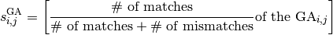
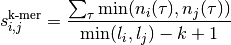
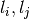
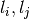
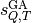
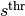
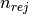
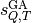
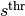
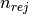

OTUCLUST¶
OTUCLUST is a new open-source application specifically created to divide a set of amplicon reads into clusters. Given an identity threshold (e.g. 97%), a cluster is defined by a centroid (i.e. representative sequence ) and by the sequences which have similarity above the threshold with the representative. OTUCLUST is the default clustering method used in micca-otu-denovo.
Definition of pair-wise identity¶
Different definitions of pair-wise identity are used by different
clustering software. There is no general consensus of how internal
gaps should be treated in this calculation. In OTUCLUST internal and
external gaps are ignored [Hwang2013]. Given a global alignment (GA),
between the sequences  and
and  the pair-wise identity
is defined as:
the pair-wise identity
is defined as:

where mismatch and gap penalties equal to one.
OTUCLUST algorithm overview¶
The OTUCLUST procedure is composed by three main steps: a) dereplication and abundance estimation, b) denovo chimera removal (optional, with UCHIME) and c) clustering using the dereplicated sequences as centroids.
Dereplication and chimera removal (optional)¶
The goal of the dereplication is the removal of duplicate sequences. This step is performed by the clustering procedure (described below) with an identity threshold of 100% or by exact prefix matching (faster dereplication). At the end of the dereplication step, singletons are discarded. Abundance is estimated by counting the number of reads having a given unique sequence. Dereplicated sequences are ordered by their abundance and passed to UCHIME (denovo mode). Reads detected as chimeras are removed.
Clustering¶
Finally, dereplicated and chimera-free sequences are used as cluster seeds by the clustering algorithm. The clustering procedure relies on a search algorithm defined as follows:
given a query sequence
 , the sequence database is sorted by
decreasing k-mer similarity. The k-mer similarity is defined as
[Hwang2013]:
, the sequence database is sorted by
decreasing k-mer similarity. The k-mer similarity is defined as
[Hwang2013]:
where
 is a k-mer,
is a k-mer,  is the number of
occurences of the k-mer in the sequences and  are
the lenght of sequences and respectively.
is the number of
occurences of the k-mer in the sequences and  are
the lenght of sequences and respectively.For each sequence in the sorted database (target sequence,
 ) the similarity  is
computed. If is greater or equal than
the identity threshold  (e.g. 0.97) the
sequence is added to the results and the reject counter
 is set to zero. On the other hand
is incremented by one.
) the similarity  is
computed. If is greater or equal than
the identity threshold  (e.g. 0.97) the
sequence is added to the results and the reject counter
 is set to zero. On the other hand
is incremented by one.If reaches the maximum number of consecutive rejects allowed
 (e.g. 32) it is rather unlikely that an
other hit exist.
(e.g. 32) it is rather unlikely that an
other hit exist.
Given a query sequence Q and the sequence database, the clustering procedure searches (through the search algorithm) all the sequences in the DB that have similarity above the identity threshold, forming a new cluster. After that these sequences are removed from the sequence database.
OTUCLUST application¶
$ otuclust --help
usage: otuclust [-h] [-v] [-f {fastq,fasta}] [-s SIMILARITY] [-m SIZE] [-c]
[-d] [-l LEN] [--out-clust FILE] [--out-rep FILE]
input
otuclust - OTU clustering and chimera removal.
positional arguments:
input input fastq/a file
optional arguments:
-h, --help show this help message and exit
-v, --version show program's version number and exit
-f {fastq,fasta}, --format {fastq,fasta}
input file format (default fasta)
-s SIMILARITY, --similarity SIMILARITY
similarity between cluster center and cluster
sequences (default 0.97)
-m SIZE, --minsize SIZE
minimum size for a cluster (e.g. 2 removes singletons)
(default 2)
-c, --remove-chimeras
remove chimeric sequences (recommended)
-d, --derep-fast fastest (prefix based) but less accurate dereplication
(recommended for dataset with 200000+ seqs)
-l LEN, --derep-fast-len LEN
prefix length used in fast dereplication
--out-clust FILE output text file containing the clusters (default
clust.txt)
--out-rep FILE output fasta file containing the representative
sequences (default rep.fasta)
OTUCLUST 0.1
Author: Davide Albanese <davide.albanese@fmach.it>
Fondazione Edmund Mach, 2014.
Outputs:
- clust.txt
a tab-delimited file where each row contains the sequence identifiers assigned to the cluster. The first id corresponds to a representative sequence. Sequence identifiers are coded as SAMPLE_NAME||SEQ_ID:
sample1||F4HTPAO07H4B1Q sample1||F4HTPAO07ILHKH sample1||F4HTPAO07H8VJE ... sample3||F4HTPAO05FO0LC sample2||F4HTPAO02BVI74 sample3||F4HTPAO05FQCOF ... ...
- rep.fasta
a FASTA file containing the representative sequence for each OTU:
>sample1||F4HTPAO07H4B1Q GTCCACGCCGTAAACGGTGGATGCTGGATGTGGGGCCCGTTCCACGGGTTCCGTGTCGGA GCTAACGCGTTAAGCATCCCGCCTGGGGAGTACGGCCGCAAGGCTAAAACTCAAAGAAAT TGACGGGGCCCGCACAAGCGGCGGAGCATGCGGATTAATTCGATGCAACGCGAAGAACCT TACCTGGGCTTGACATGTTCCCGACGGTCGTAGAGATACGGCTTCCCTTCGGGGCGGGTT CACAGGTGGTGCATGGTC >sample3||F4HTPAO05FO0LC GTCCACGCCGTAAACGATGAATACTAGGTGTTGGGAAGCATTGCTTCTCGGTGCCGTCGC AAACGCAGTAAGTATTCCACCTGGGGAGTACGTTCGCAAGAATGAAACTCAAAGGAATTG ACGGGGACCCGCACAAGCGGTGGAGCATGTGGTTTAATTCGAAGCAACGCGAAGAACCTT ACCAAGTCTTGACATCCTTCTGACCGGTACTTAACCGTACCTTCTCTTCGGAGCAGGAGT GACAGGTGGTGCATGGTT ...
| [Hwang2013] | (1, 2) Hwang et al. CLUSTOM: A Novel Method for Clustering 16S rRNA Next Generation Sequences by Overlap Minimization. PLoS ONE, 2013. |